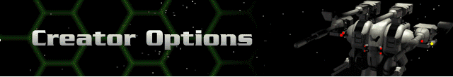

The game’s creator is the person who initiates a game and sets all of the parameters, as listed below.
Player Names – click on any of the player name slots to toggle between available and closed. Closed will remove that slot from the game effectively reducing the number of players who may join. The creator has the option of limiting the game down to two players.
Force Value – determines the credit value of all Hercs, weapons and devices, and Bioderms that you may bring into battle.
Rank Level – determines the maximum equivalent Tech Level of Hercs, weapons, devices, and Unique Bioderms that may be part of your group. If a Rank Level of 7 is selected, for instance, nothing that is available at a Tech Level of 8 or higher may be part of your group. The multi-player Rank Level also limits your rank as a Herc Commander. In other words, you may only play a Rank Level 4 multi-player game as a Squad Captain (which is the Rank at which Tech Level 4 is acquired in single-player mode).
Planet – select the planet on which you will do battle.
Cybrid Presence – determine the number of Cybrid forces that will participate. These will be non-discriminating enemy forces which will add another dimension to multi-player games. Leaving this setting at zero will allow only human-controlled forces to play.
Timer – sets the amount of time for each player’s turn. For smaller Force Values (this usually corresponds to fewer Hercs), a shorter amount of time will make for a faster-paced, more interesting game. The timer can range from 30 seconds to limitless.
Fog of War – this option controls the view in the main window of the battle screen. Once territory is navigated by any player on the map it will either remain completely visible or partially obscured (ghosted) depending on this setting.
Herc Carrier – determines whether or not a Herc Carrier will accompany all groups to the battlefield.
After all of these selections are made, and all players have their ready boxes checked, click Begin Game to proceed to Multi-Player Battle. Note that player numbers will be recalculated at the start of the game and may not match the player number from the launch menu.